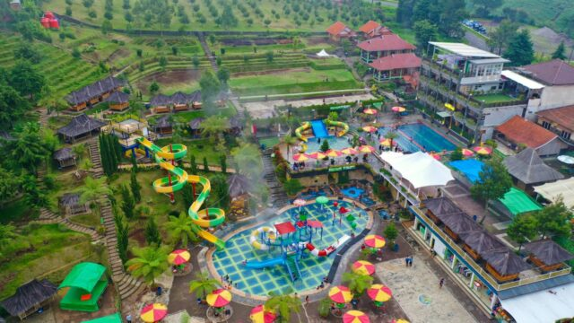

Darajat Pass Waterpark

Darajat Merupakan sebuah objek wisata dengan kategori pemandian air panas. Terletak di desa padawaas, kecamatan pasirwangi, kabupaten Garut.
Akses lokasi wisata ini mudah dilalui oleh kendaraan roda dua maupun roda empat, bahkan bus juga bisa melalui jalan tersebut karena kondisi jalannya cukup baik meskipun agak sempit dan menanjak.
Bahkan selama 2 tahun terakhir, 70% pengunjung wisata dari luar daerah Garut memilih Darajat sebagai destinasi utama mereka dengan alasan "darajat itu menarik".
Artikel Selengkapnya | Read